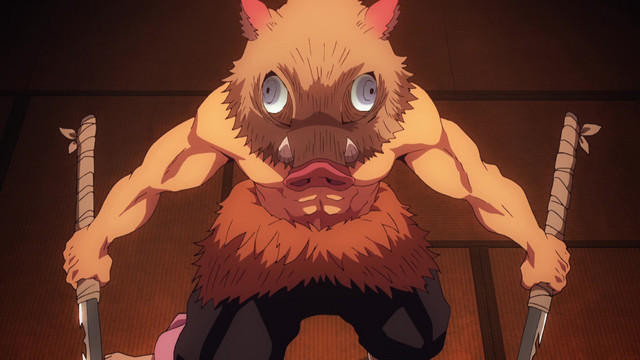
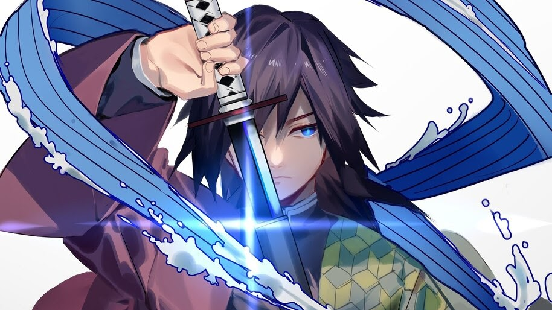
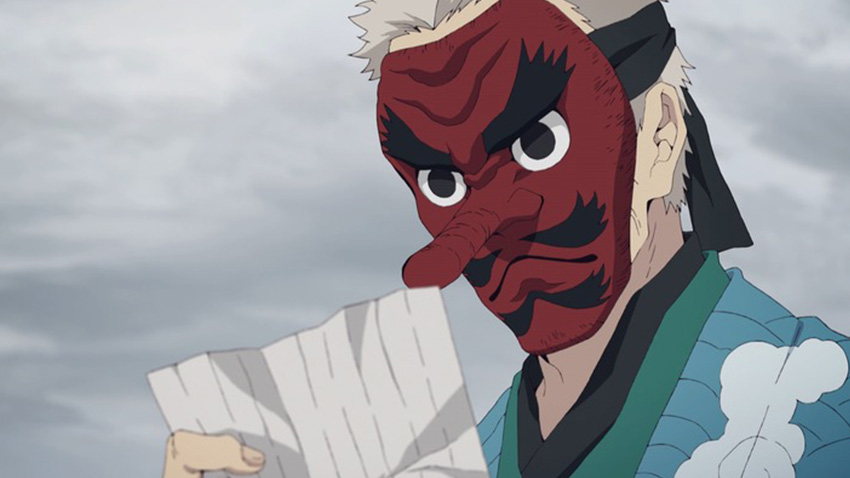
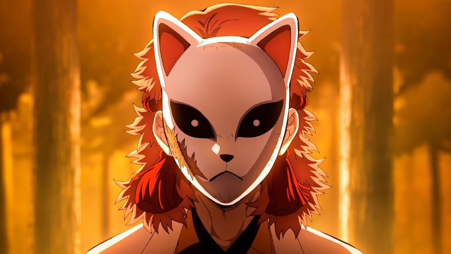
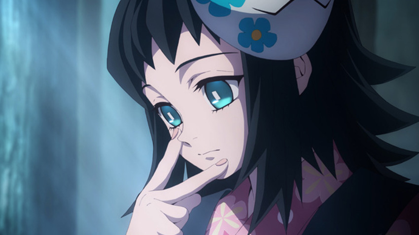

Tanjiro joins the Demon Slayer Corps in order to turn his sister Nezuko, who has become a demon, back into a human, as well as to avenge the death of his family by hunting down the demon who killed them. He has an acute sense of smell which enables him to identify the weak spots in demons or other opponents he battles.
Tanjiro's younger sister. After being attacked by a demon whose blood entered her body through an open wound, she became a demon herself. Even after becoming a demon, she protects Tanjiro and other humans. Before she was transformed, she was a gentle girl who loved her family.
He joins the Demon Slayer Corps at the same time as Tanjiro.
He has an acute sense of hearing, and can identify the sounds made by other people or demons.
Zenitsu has zero confidence in himself and often talks self-deprecatingly.
However, when he is scared to death, he falls asleep and his personality changes to a sharp-minded person.

He joins the Demon Slayer Corps at the same time as Tanjiro.
Inosuke is a very aggressive boy, and is always seen wearing a wild boar mask.
Because he grew up in the mountains, he has an acute sense of touch which enables him to locate anything that he cannot see in his immediate surroundings.

Giyu is one of main members of Hashira, a group of the Corps' top-ranked slayers.
A quiet, stoic man, he is the one who recruited Tanjiro for the Demon Slayer Corps.

A man with a goblin mask. He lives in a small hut at the foot of Mount Sagiri where he trains candidate Demon Slayer Corps swordsmen.

An orphan adopted and raised by Urokodaki. Sabito suddenly appears before Tanjiro during training.

Also an orphan raised by Urokodaki like Sabito. Makomo is a cute girl with a mysterious air.